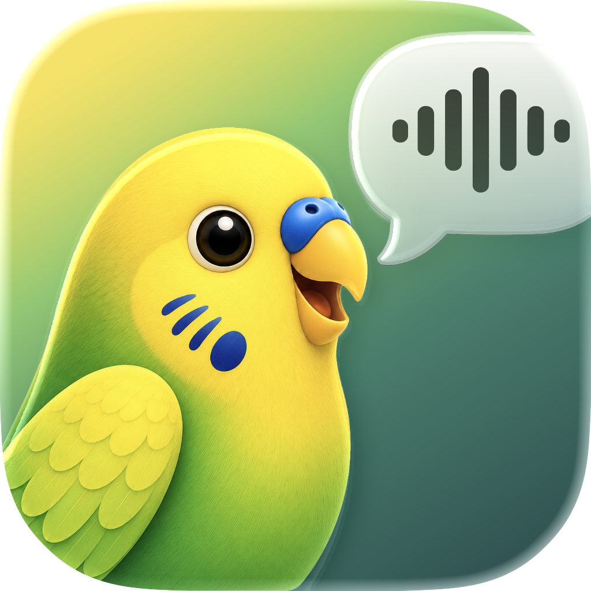

Trascrizione di un audio
Trascina un file o selezionalo dal Mac. Supporta WAV, MP3, M4A, FLAC, OGG, OPUS, AIFF e AAC.

Parrocchettami ScaricaTrasforma audio in testo completamente offline, senza alcuno scambio di dati, in modo velocissimo.
Apple Silicon, macOS 14+
Trascrivo audio in testo, in locale.
* non è la reale interfaccia della app
Importa un file o registra dal microfono.
L'audio viene trascritto con un modello AI locale sul Mac.
Copia, modifica o esporta il risultato.
Due modalità
Parrocchettami è pensato per un flusso semplice: scegli un audio già pronto oppure registra direttamente dal microfono, poi esporta il testo nel formato più adatto.
Trascina un file o selezionalo dal Mac. Supporta WAV, MP3, M4A, FLAC, OGG, OPUS, AIFF e AAC.
Registra dal microfono, metti in pausa, riprendi e trascrivi quando la registrazione è pronta.
Esporta testo semplice, testo con timestamp oppure sottotitoli in formato SRT.
25 lingue
Parrocchettami può rilevare automaticamente la lingua oppure lavorare con una lingua specifica tra le 25 supportate dal modello.
Privacy
Dopo il download del modello AI, Parrocchettami non richiede alcuna connessione a internet. Gli audio non vengono mai caricati su servizi esterni e dopo la trascrizione vengono cancellati.
Confronto
Una panoramica pratica tra strumenti locali, app Mac e servizi online: privacy, peso, costo e lavoro offline.
| Strumento | ⚡ Velocità | 🎯 Accuratezza | ⚖️ Peso | Gratis | 🔓 Open source | Funziona offline |
|---|---|---|---|---|---|---|
| Parrocchettami | ~0,7 GB | ✅ | ✅ Sì | ✅ | ||
| MacWhisper | ~1-10 GB | ✅ | ❌ No | ✅ | ||
| Whisper | ~1-10 GB | ✅ | ✅ MIT | ✅ | ||
| Otter.ai | Trascrizione online | ✅ | ❌ No | ❌ | ||
| Descript | Trascrizione online | ✅ | ❌ No | ❌ |
Su schermi piccoli puoi scorrere la tabella lateralmente.
Stelle qualitative per questo caso d'uso. Fonti: OpenAI Whisper, paper Whisper, NVIDIA Parakeet, MacWhisper, Otter.ai, Descript.
Export
Trascrizione pulita da copiare, modificare o salvare.
Frasi raggruppate con tempi di inizio e fine per la revisione.
Sottotitoli pronti per video, montaggio e revisione.
Guida all'installazione
Requisiti: macOS 14 o successivo, Mac Apple Silicon.
Quando provi ad aprire l'app, macOS potrebbe bloccarti dicendo che “Apple non ha potuto verificare questa app”. Vuol dire che non è sicura?
No. Questo avviso riguarda la notarizzazione: Apple richiede che gli sviluppatori verifichino le proprie app, ma per farlo devono pagare 100 euro all'anno per l'Apple Developer Program.
Quando un utente prova a installare un'app non “notarizzata”, macOS manda questo avviso. Parrocchettami è sicura e open source, il suo codice si può controllare e fare una build direttamente dal codice.
Scarica la beta pubblica 1.0.10 dal rilascio GitHub.


Immagini e procedura di riferimento: Apple Support, apertura sicura delle app su Mac. Prezzo membership: Apple Developer Program.
Open source
Parrocchettami è open source. Il codice dell'app è rilasciato sotto GPL-3.0-or-later; parakeet.cpp è distribuito con licenza MIT; il modello NVIDIA Parakeet TDT 0.6B v3 e la conversione GGUF seguono le rispettive licenze e attribuzioni.
Autore
FAQ
No. Internet serve solo per il download iniziale del modello AI e delle dipendenze. Dopo il setup, la trascrizione avviene localmente.
Da nessuna parte. Gli audio non vengono mai caricati su servizi esterni e dopo la trascrizione vengono cancellati.
Puoi usare WAV, MP3, M4A, FLAC, OGG, OPUS, AIFF e AAC. L'app converte l'audio nel formato richiesto dal motore locale.
Puoi esportare testo semplice, testo con timestamp oppure sottotitoli in formato SRT.
Questa build è pensata per macOS 14 o successivo su Apple Silicon.
Succede perché Parrocchettami non è ancora notarizzata da Apple. Non vuol dire che contenga malware: vuol dire che Apple non l'ha verificata con il proprio servizio. Sposta l'app in Applicazioni, poi vai in Impostazioni di Sistema → Privacy e Sicurezza e scegli Apri comunque.
Al momento non sono previste. Il codice però è open source, quindi può essere studiato, modificato e adattato da chi vuole portarlo su altre piattaforme.
Il modello AI occupa circa 707 MB. Il binario parakeet-cli pesa circa 3 MB; considera quindi poco meno di 1 GB di spazio libero per stare comodo.
Whisper è molto potente e diffuso. Parrocchettami punta invece su un'esperienza Mac pronta all'uso, offline, senza Python o server, basata su NVIDIA Parakeet e parakeet.cpp.